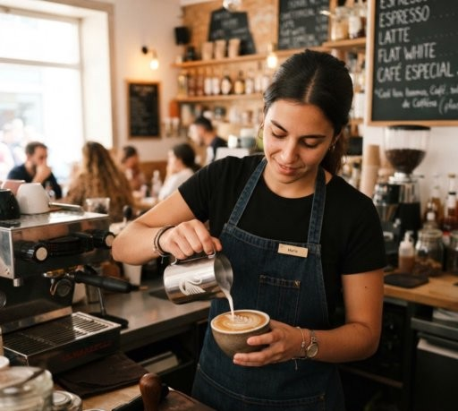
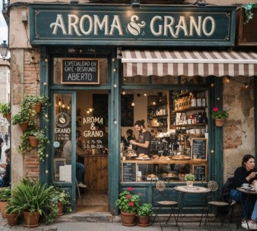
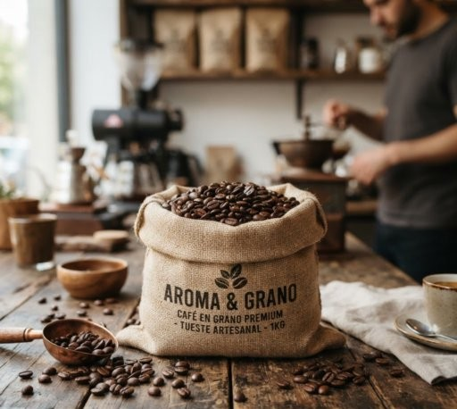

Café de Origen
Granos 100% arábica cosechados bajo procesos de comercio justo.
Cafetería de Especialidad
Granos seleccionados de los mejores orígenes, tostados a la perfección para ofrecerte una experiencia única.
Explorar Menú
Granos 100% arábica cosechados bajo procesos de comercio justo.

Postres y pan recién horneado todos los días para acompañar tu bebida.

Ambiente tranquilo con Wi-Fi de alta velocidad, ideal para trabajar o estudiar.


En Aroma & Grano combinamos la pasión por el café de especialidad peruano con un ambiente acogedor en el corazón de Pueblo Libre. Trabajamos de la mano con pequeños caficultores de Cusco, Cajamarca y Junín, asegurando granos seleccionados con tostado artesanal para brindarte una experiencia única en cada visita.



Disfruta de la mejor experiencia en café de especialidad en un ambiente acogedor.
Av. Bolívar 1234, Pueblo Libre, Lima - Perú
Lunes a Sábado: 8:00 a.m. - 9:30 p.m.
Domingos: 9:00 a.m. - 8:00 p.m.